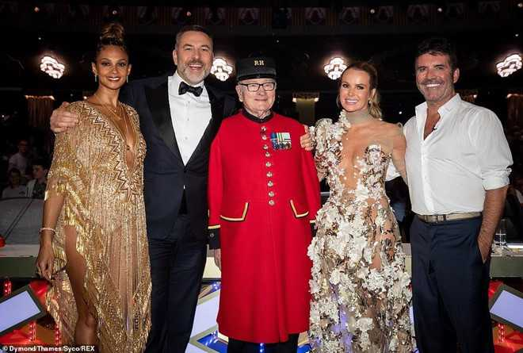

Cụ ông 89 tuổi thắng Britain's Got Talent nhờ giọng hát tình cảm
-
Cụ ông 89 tuổi thắng Britain's Got Talent nhờ giọng hát tình cảm
Ông Colin Thackery bất ngờ khi được xướng tên là người chiến thắng Britain's Got Talent 2019. Ông nhận được hơn 300.000 USD tiền mặt cùng những giải thưởng có giá trị khác.
-
Trong đêm chung kết, Thackery thể hiện ca khúc "Love Changes (Everything)". Phong cách biểu diễn mộc mạc cùng giọng hát giàu cảm xúc đã giúp ông chinh phục khán giả.
Tối 2/6 (giờ địa phương), đêm chung kết cuộc thi Tìm kiếm tài năng nước Anh - Britain's Got Talent 2019 lên sóng kênh ITV. Vượt qua hai ảo thuật gia X và Ben Hart, cụ ông 89 tuổi Colin Thackery đăng quang ngoạn mục.
Với chiến thắng này, Thackery nhận phần thưởng gồm 250.000 bảng Anh (khoảng 315.000 USD) tiền mặt cùng một hợp đồng thu âm và cơ hội biểu diễn trong Royal Variety Performance vào cuối năm nay. Đây là chương trình âm nhạc, khiêu vũ, ca hát và hài kịch nhằm gây quỹ hỗ trợ Tổ chức Từ thiện Hoàng gia Anh.
-

Cụ ông 89 tuổi bất ngờ khi được xướng tên là người chiến thắng.
Người đàn ông từng phục vụ cho quân đội Anh bất ngờ khi được xướng tên. Ông chia sẻ: "Thật không thể tin được. Tôi không biết phải nói gì cả. Cảm ơn các bạn rất nhiều vì đã ủng hộ tôi hết mình".
Trong đêm chung kết, Thackery thể hiện ca khúc Love Changes (Everything) của Climie Fisher. Phong cách biểu diễn mộc mạc, chân thành cùng giọng hát giàu cảm xúc giúp cụ ông 89 tuổi chinh phục trái tim hàng triệu khán giả.
Ở buổi thử giọng đầu tiên, ông gây xúc động khi hòa giọng trong Wind Beneath My Wings, bài hát Thackery dành tặng cho người vợ quá cố của mình.
-

Ông Colin Thackery chụp hình cùng ban giám khảo sau khi giành được chiến thắng.
Colin Thackery sinh năm 1930 và gia nhập quân đội khi 15 tuổi. Ông đã phục vụ trong quân đội 25 năm trong trung đoàn 45 của Pháo binh Hoàng gia, và là một cựu chiến binh của chiến tranh Triều Tiên. Đây cũng là nơi ông gặp và kết hôn với vợ, bà Joan.
"Chúng tôi di chuyển từ Durham về phía Nam và quyết định kết hôn khi nghỉ việc. Tôi đã nghỉ hai tuần trước khi lên tàu sang Hàn Quốc", Thackery kể lại.
Britain's Got Talent 2019 lên sóng từ ngày 6/4, thu hút nhiều thí sinh trên khắp thế giới thể hiện tài năng ca hát, nhảy múa, ảo thuật... Simon Cowell, Amanda Holden, Alesha Dixon và David Walliams là ban giám khảo của mùa giải.
Theo MC chương trình, cuộc thi sẽ trở lại vào cuối năm nay với số đặc biệt, Britain's Got Talent: The Champions - nơi các cựu thí sinh sẽ tranh tài một lần nữa.
-
Giám khảo Britain's Got Talent tiếp tục mặc hở bạo dù bị chỉ trích
Nữ giám khảo 48 tuổi Amanda Holden chuộng phong cách thời trang táo bạo bất chấp sự phản đối từ số đông khán giả.